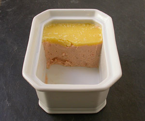

Lachsterrine
5,5 von 6300 g bio lachsfilet ohne haut in etwas gemüsebouillon 5 minuten garen, in der brühe abkühlen lassen. mit 2 tl koriandersamen, etwas muskat sowie salz und pfeffer würzen. mit 2 esslöffel doppelrahm und 75 g weiche butter sowie 2 esslöffel weissweinessig kurz püriren. in ein töpfchen geben und glatt ausstreichen. falls nicht zum sofortigen gebrauch bestimmt mit ca. 50 g flüssiger butter übergiessen und im kühlschrank aufbewahren.
